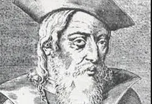

Paio Soares de Taveirós
Pioneiro da poesia galaico-portuguesa, autor da célebre "Cantiga da Ribeirinha".
Pioneiro da poesia galaico-portuguesa, autor da célebre "Cantiga da Ribeirinha".

O "Rei Poeta", responsável pelo florescimento das cantigas de amigo e amor em Portugal.

Pai do teatro português, famoso por satirizar a sociedade da época em seus autos.

Pai da historiografia portuguesa, renovou as crônicas ao retratar a história do povo.

Expoente do Renascimento, autor do épico "Os Lusíadas" e de líricas marcantes.

Introduziu as formas poéticas renascentistas (como o soneto) na literatura portuguesa.

Conhecido como "Boca do Inferno", destacou-se pela poesia satírica e religiosa.

Mestre da oratória em língua portuguesa, célebre por seus sermões conceituistas e reflexivos.

Nome central do Arcadismo brasileiro, associado ao bucolismo e à Inconfidência.

Autor da obra pastoril lírica "Marília de Dirceu" e de sátiras políticas marcantes.

Principal representante do Ultra-Romantismo, marcado pela melancolia e idealização.

O "Poeta dos Escravos", ícone da 3ª geração romântica e da luta abolicionista.

Consolidou o romance nacionalista no Brasil com obras indianistas e urbanas.

Mestre da literatura brasileira, criador de obras complexas com profunda análise psicológica.

Pioneiro do Naturalismo no Brasil, célebre por romances de observação social como "O Cortiço".

Conhecido pelo rigor formal e busca pela perfeição estética na poesia.

Um dos maiores poetas simbolistas, marcou a literatura pelo subjetivismo e musicalidade.

Figura fundamental da poesia brasileira moderna, retratando o cotidiano e reflexões existenciais.

Uma das vozes mais inovadoras da ficção brasileira, referência em prosa introspectiva.

Revolucionou a linguagem literária com invenções linguísticas e a mística do sertão.